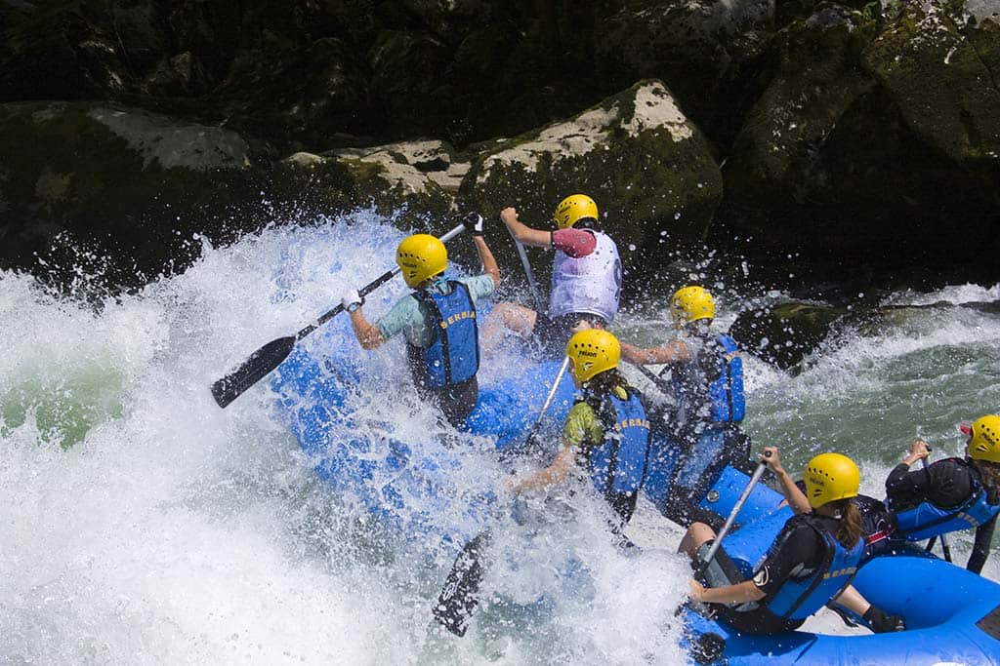
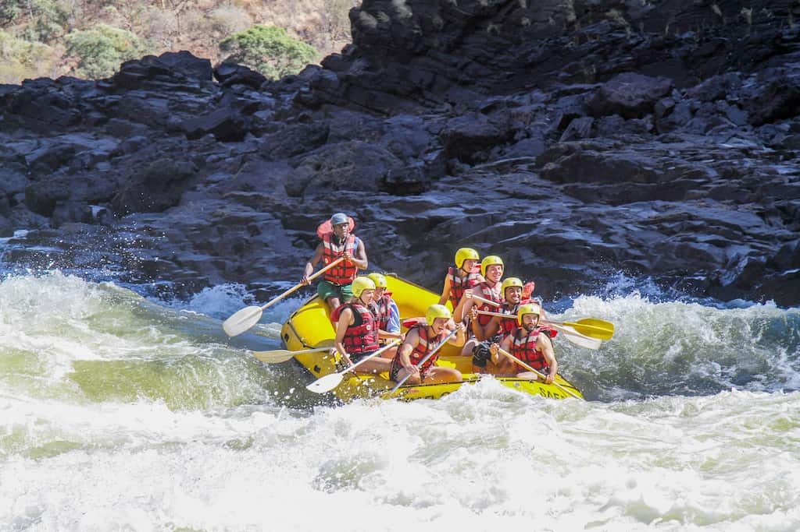
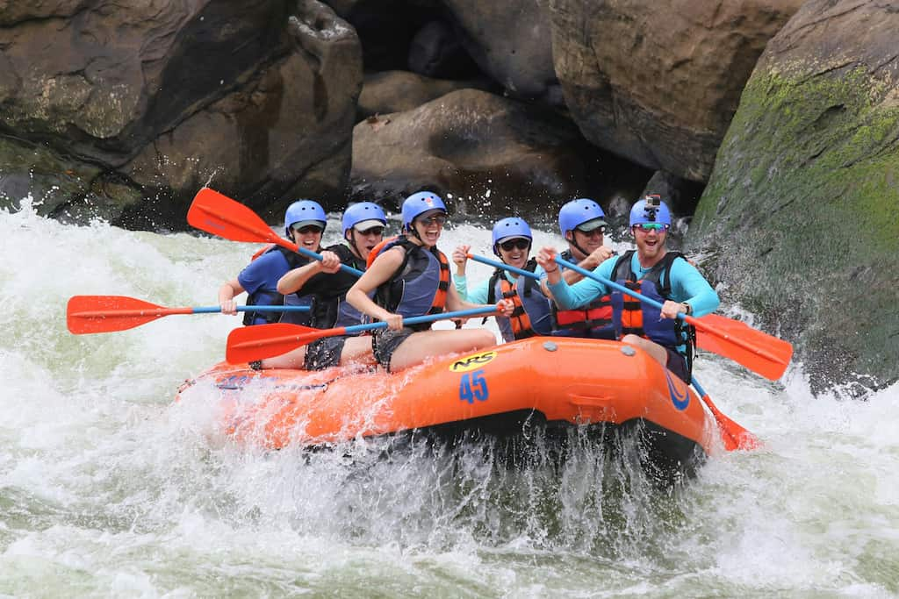
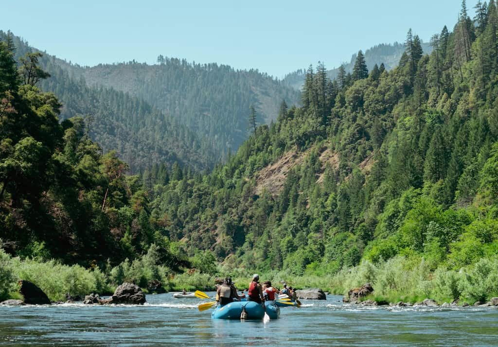
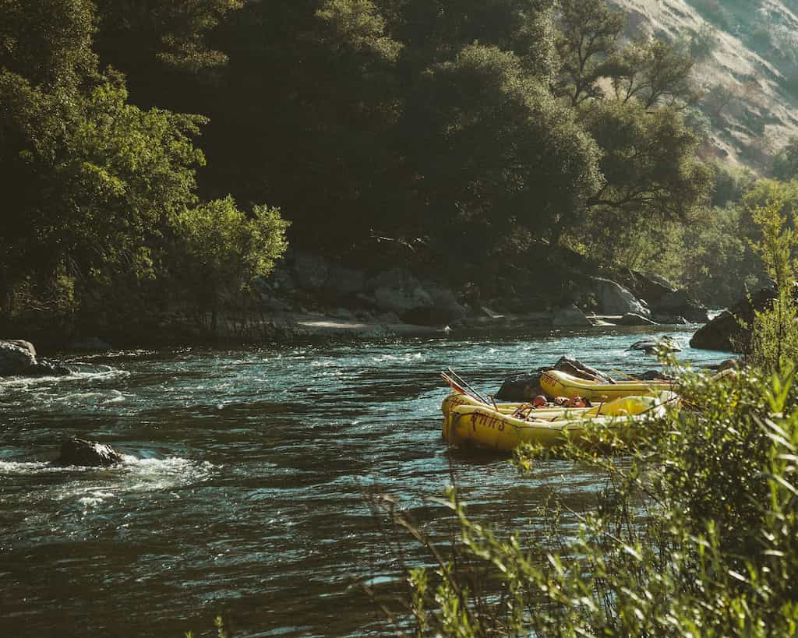

Any Questions?

If you ever have any questions, please consider writing us a message. We will reply you as early as possible. Contact Us!
The Salmon River
The "River of No Return" is an epic wilderness adventure. Multi-day expeditions feature thrilling Class II–IV rapids, natural hot springs, stunning Native American pictographs, side-hikes to abandoned homesteads, and evenings relaxing on massive, white-sand beaches beneath towering ponderosa pines.


Sock 'Em Dog
A "Sock 'Em Dog" rafting trip refers to an intense, adrenaline-pumping whitewater experience featuring the famous rapid of the same name. These trips feature fast, challenging boulder gardens and massive drops. The difficulty means you must be a strong swimmer and physically fit to participate. The rapid itself, often just called "Sock 'Em", tests even highly experienced rafters. Two prominent rivers are famous for their Sock 'Em Dog runs: The Chattooga River (Georgia & South Carolina) and The Upper Kern River (California)
The Ghost Rider
The "Ghostrider" is a famous, adrenaline-pumping Class IV-V whitewater rapid found on the multi-day Zambezi River rafting trips below Victoria Falls. It features a massive wave train of three giant, consecutive waves that must be navigated perfectly to avoid flipping or taking on water.

The Rogue River
A Rogue River rafting trip in Oregon is a premier 3- to 5-day adventure through the congressionally designated "Wild & Scenic" corridor. Rafters navigate splashy Class II–III rapids, explore side-canyon waterfalls, hike historical homesteads, and enjoy comfortable riverside camping or lodge-to-lodge staysAvailable trips
| Trip Name | Location | Rapids / River |
|---|---|---|
| Ghost Riderr | Fernie, BC | Elk River |
| Victoria Falls, Zambia | Zambezi River | |
| Salmon River | Central/Eastern Idaho | Frank Church River, Salmon River |
| Canadian River | Golden, BC | Kicking Horse River |
| Jasper, AB | Sunwapta River | |
| near Banff, AB | Horseshoe Canyon | |
| Sock 'Em Dog | Georgia, South Carolina | Chatooga River, Upper Kern River |
| Rogue River | Merlin/Galice, Oregon | Blossom Bar Rapid |